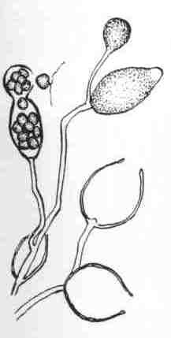

水稻疫霉病
病害别名：无
为害部位：秧苗
病害性质：一般病害
病原：稻苗疫霉菌(Phytophthora fragariae var.oryza-bladis Wang etLu)水稻疫霉病菌孢子囊和游动孢子
病害表现：主要为害早、中稻秧苗，在叶片上形成绿色水渍状不规则条斑，条斑边缘呈褐色。病害急剧发展时，条斑相互愈合,以至叶片纵卷成弯折。一般只造成秧苗中、下部叶片局部枯死，严重时全叶或整株死亡。
 水稻疫霉病
水稻疫霉病
发病规律：疫霉菌在土壤中越冬，翌年春季水稻育秧期间在稻叶上萌发，从叶片气孔侵入，引起发病。发病最适宜温度为16~21℃，超过25℃病害受到抑制。秧苗三叶期前后，遇低温、连阴雨、深水灌溉，特别是秧苗淹水，病害发生就重。
病害防治: 1．秧田轮换 病区年年更换秧田，可减少初次侵染来源，防病效果明显。2，加强肥水管理 秧田畦面要平整，防治低处浸水。要浅水勤灌，避免漫灌，适当增施肥料，提高抗病力。3．药剂防治 以早、中稻秧田三叶期为重点防治对象。药剂可选用5O％多菌灵可湿性粉剂 1000倍液，或50％托布津可湿性粉剂 1000倍液叶面喷雾。